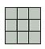
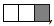
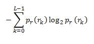
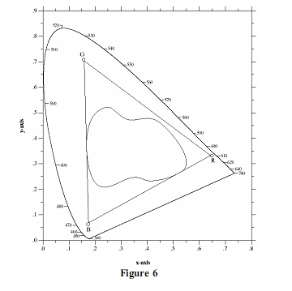

Torna alla pagina di Elaborazione delle Immagini
:: Appello d'esame di Elaborazione delle Immagini - 16/07/2008 ::
Esercizio 1 (Operatori Morfologici)
Guardando l’immagine mostrata in Figure 1:
Un sistema di riconoscimento di caratteri ( OCR, optical character recognition ) è utilizzato per riconoscere la lettera in figura A. Si tratta di una H che nel processo di digitalizzazione ha subito alcune ‘deformazioni’. Indicare le operazioni morfologiche utili a migliorare l’immagine prima ancora di essere elaborata dal sistema OCR.(Si consideri l’immagine composta solo da pixel o bianchi o neri).
SOLUZIONE
L'operazione morfologica che permette di sistemare la figura è la Chiusura, in quanto assottiglia i contorni, fonde rotture sottili ed elimina piccoli vuoti.
La chiusura è definita come:
quindi la chiusura di A attraverso B è semplicemente la dilatazione di A attraverso B, seguita dall'erosione del risultato attraverso B.
Nel nostro caso prendiamo un elemento strutturante così formato:

L'elemento strutturante tipico a croce non va bene perché non riesce a sistemare la lettera, infatti rimangono dei vuoti che non portano ad una H pulita e nemmeno migliore rispetto a quella dell'immagine originale.
La fase di dilatazione serve per accrescere o ispessire gli oggetti in un'immagine binaria, ovviamente in base alla forma dell'elemento strutturante. In questo caso è sufficiente che l'elemento strutturante ricopra almeno un punto dell'oggetto, non deve essere completamente contenuto come nel caso dell'erosione.
In questo caso ci permette di eliminare i piccoli vuoti e di creare una H cicciona.
Il risultato ottenuto è il seguente:
Nella fase di erosione l'elemento strutturante deve essere completamente contenuto nell'oggetto e non deve avere quindi elementi in comune con lo sfondo.
L'immagine dell'esercizio la consideriamo binaria: i quadrati grigi con valore 1 e quelli bianchi con valore 0.
Dall'operazione di erosione otteniamo il seguenti risultato (la parte finale erosa è quella in rosso):
Il risultato ottenuto è una bella H pulita, senza interruzioni, protuberanze o vuoti.
Esercizio 2 (Huffman)
Data l’immagine B si è deciso di applicare la codifica di Huffman per la sua compressione.
I simboli scelti per la codifica sono rappresentati dalle possibili configurazioni di tre pixel contigui, ad es:
Indicare:
- tutti i possibili simboli.
- la probabilità dei simboli nell’immagine e quindi
- la sua codifica secondo Huffman.
(Supporre l’immagine composta solo da pixel accesi o spenti)
SOLUZIONE
1- tutti i simboli possibili sono 8 e sono presentati di seguito, dove i primi cinque sono quelli effettivamente presenti nell'immagine mentre gli altri tre non sono presenti:

2- i simboli dell'immagine in totale sono 48 e quelli presenti con rispettive probabilità sono (già in ordine decrescente per la codifica di Huffman):
24/48 = 0.5
10/48 = 0.2
9/48 = 0.18
4/48 = 0.08
1/48 = 0.02
3-
Il primo passo della codifica viene mostrato di seguito:
PROBABILITA' RIDUZIONE 1 RIDUZIONE 2 RIDUZIONE 3
0.5 0.5 0.5 0.5
0.2 0.2 --> 0.28-------> 0.48
| |
0.18 0.18------ 0.2------
|
0.08---------> 0.1-----
|
0.02----
Il secondo passo della codifica con l'assegnamento dei codici a lato delle probabilità invece è il seguente:
PROBABILITA' RIDUZIONE 1 RIDUZIONE 2 RIDUZIONE 3
0.5 0 0.5 0 0.5 0 0.5 0
0.2 11 0.2 11 --0.28 10<--- 0.48 1
| |
0.18 100 0.18 100<-- 0.2 11<---
|
0.08 1010<----0.1 101<--
|
0.02 1011<---
Quindi avremo come output della codifica il seguente assegnamento:
0
11
100
1010
1011
Esercizio 3
Che cosa è il rumore nelle immagini? Quali sono le origini del rumore? Indicare uno dei possibili rumori introdotti a lezione ed indicarne proprietà matematiche e possibili algoritmi per la riduzione.
SOLUZIONE
Il rumore nelle immagini è una sorta di "disturbo" che peggiora la qualità dell'immagine, cioè ne diminuisce il contenuto informativo e visuale.
Il rumore ha origine durante le fasi di acquisizione e/o trasmissione. Durante l'acquisizione ad esempio i fattori che determinano la presenza di rumore possono essere: la qualità dell'illuminazione in una scena, la qualità del sensore, oppure la temperatura del sensore, ecc. Il rumore può essere introdotto durante la trasmissione a causa della presenza di alcune interferenze sul canale, cosa che può avvenire ad esempio se le immagini vengono trasmesse tramite wireless.
Un tipo particolare di rumore è quello periodico che deriva solitamente da interferenze elettriche o elettromeccaniche presenti durante l'acquisizione. Questo tipo di rumore è ridotto in modo efficace utilizzando il filtraggio nel dominio della frequenza.
Il tipo di rumore che trattiamo è: Sale e Pepe. Nell'immagine in cui è presente questo tipo di rumore si possono notare dei puntini neri e dei puntini bianchi oppure solo uno dei due tipi.
La definizione corretta del rumore Sale e Pepe è Rumore a Impulsi Bipolare, ma viene chiamato sale e pepe per via della somiglianza con i granuli sale-e-pepe che sono distribuiti casualmente nell'immagine.
Solitamente il rumore ad impulsi è presente quando si verificano transizioni veloci durante il processo di imaging.
La densità di probabilità(PDF) di questo tipo di rumore è data da:
p(z) = {
Pa per z=a
Pb per z=b
0
}
Quindi se b>a apparirà come un punto chiaro nell'immagine, mentre se a>b allora comparirà come un punto scuro. Nel caso in cui Pa o Pb sono nulli allora il rumore viene definito Unipolare, cioè o solo Sale o solo Pepe per via della presenza di soli puntini bianchi o soli puntini neri.
I puntini bianchi e neri sono puri, quindi avranno il valore di intensità minore (0 nero) e maggiore (255 bianco) dell'immagine(non saranno gli unici pixel ad avere valore minore o maggiore, dipende da che tipo di immagine abbiamo), quindi nell'istogramma alle estremità avremo o dei picchi o comunque dei valori aggiuntivi (dipende sempre dal tipo di immagine che abbiamo).
Solitamente il filtro più efficace con il rumore Sale e Pepe è il filtro mediano, che nel caso di rumori casuali è più efficace rispetto ai filtri di smoothing perché sfoca di meno l'immagine. Questo filtro è efficace sia col rumore Bipolare che Unipolare.
Il filtro mediano sostituisce il valore di un pixel con il mediano dei livelli di intensità nel suo intorno.
Esercizio 4
Data l’immagine raffigurata in C.
- Calcolare il suo istogramma
- l’entropia di primo ordine.
- Quanti bit sono necessari per memorizzare l’intera immagine (non compressa)?
- Filtrare l’immagine con un filtro mediano 2*2.
SOLUZIONE
1- Ci sono:
- 7 livelli di intensità 1
- 8 livelli di intensità 10
- 10 livello di intensità 15
Ricordiamo che l'istogramma di un'immagine digitale con livelli di intensità nella gamma [0, L-1] è una funzione discreta h(rk)=nk dove rk è il valore d'intensità k-esimo ed nk è il numero di pixel dell'immagine con intensità rk.
2- Per poter calcolare l'entropia serve prima calcolare la probabilità dei livelli di intensità, che è: p(rk)=nk/MN dove M e N sono le dimensioni dell'immagine.
Nel nostro caso avremo che:
l'immagine è una 5X5 e quindi le probabilità sono:
p(1): 7/25 = 0.28
p(10): 8/25 = 0.32
p(15): 10/25 = 0.4
L'entropia è l'informazione media della sorgente di intensità immaginaria in bit, detto in parole umane la quantità media di informazione presa dalla sorgente.
Il rapporto tra l'entropia e la quantità di informazione visiva è tutt'altro che intuitivo. Cioè ci possono essere delle immagini che sembrano avere pochissima informazione visiva, ma allo stesso tempo avere un'alta entropia.
L'entropia di primo ordine si calcola tramite la seguente formula:

dove pr è la probabilità dell'occorrenza del livello di intensità rk in una immagine.
Quindi nel nostro caso avremo:
- [0.28 * log2 0.28 + 0.32 * log2 0.32 + 0.4 * log2 0.4] =
- [0.28 * (-1.8365) + 0.32 * (-1.6439) + 0.4 * (-1.3219)] =
1.5690 bit/pixel
3- La formula per sapere il numero totale di bit richiesti per rappresentare un'immagine è MNLavg; dove L è la sommatoria dei prodotti del numero di bit utilizzati per rappresentare ciascuna intensità per la probabilità che quella data intensità sia presente.
In questo caso le intensità vengono rappresentate utilizzando un codice naturale a m bit a lunghezza fissa (2m = 24), per cui il secondo membro si riduce a m bit:
5 * 5 * 4 = 100
4- L'immagine filtrata diventa:
15 1 1 10 0
15 15 10 1 0
15 10 10 1 0
15 1 1 10 0
0 0 0 0 0
Esercizio 5
Definire che cosa si intende per “tristimolo”. Dare inoltre una definizione di “diagramma di cromaticità” e di “gamut”.
SOLUZIONE
I valori tristimolo corrispondono alle quantità di RGB rosso, verde, blu necessarie per formare un dato colore; queste quantità sono indicate con X, Y, Z. Quindi un colore viene specificato tramite i suoi coefficienti tricromatici definiti:
quindi x + y + z = 1.
per ogni lunghezza d'onda di luce nello spettro visibile, i valori tristimolo necessari per produrre il colore corrispondente a quella lunghezza d'onda possono essere ottenuti dalle tabelle o curve che sono state compilate a seguito di sperimentazioni.
Il diagramma di cromaticità è un altro metodo per specificare un certo colore come funzione di x(rosso) e y(verde). Per ogni valore di x e y, il corrispondente valore di z(blu) si ottiene dall'equazione z=1-(x+y).
In generale se un triangolo interno al diagramma ha i vertici sui tre colori primari fissi RGB(rosso, verde, blu): ogni colore all'interno del triangolo o sul bordo è ottenibile da una combinazione dei tre colori iniziali. Da ciò comprendiamo che con i tre colori primari fissi non si può ottenere tutta la gamma di colori presente nel diagramma di cromaticità.
Il diagramma di cromaticità ha la seguente forma:
I colori che si trovano sul bordo del diagramma sono pienamente saturi, man mano che ci si "addentra" nel diagramma aumenta la quantità di luce bianca presente e diminuisce quindi la saturazione del colore.
Oltre al triangolo è possibile definire altre figure interne utili, come ad esempio un segmento lineare che unisce due punti qualsiasi nel diagramma definisce tutte le diverse variazioni di colore che possono essere ottenute mediante combinazione lineare dei due colori.
Il Gamut(o gamut dei colori) è la gamma di colori racchiusa all'interno di una certa figura geometrica, all'interno del diagramma di cromaticità, che caratterizza un certo dispositivo, ad esempio una stampante a colori o un monitor RGB.
Quindi ad esempio in questa figura:

Il triangolo in dettaglio mostra una tipica gamma di colori prodotta dai monitor RGB.
La regione irregolare all'interno del triangolo invece è rappresentativa della serie di colori dei dispositivi di stampa a colori ad alta qualità. Il bordo del range di stampa a colori è irregolare perché la stampa a colori utilizza una combinazione di miscelazioni additive e sottrattive di colori.
Torna alla pagina di Elaborazione delle Immagini